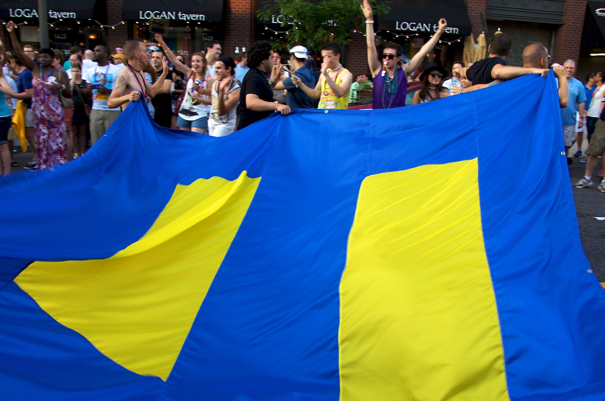
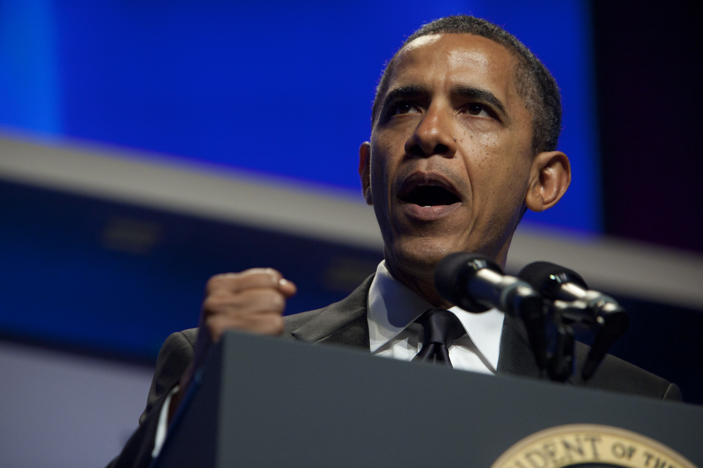
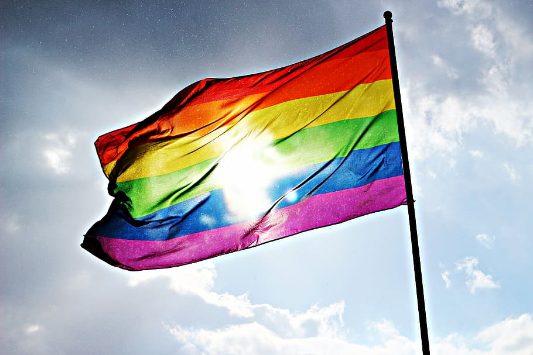
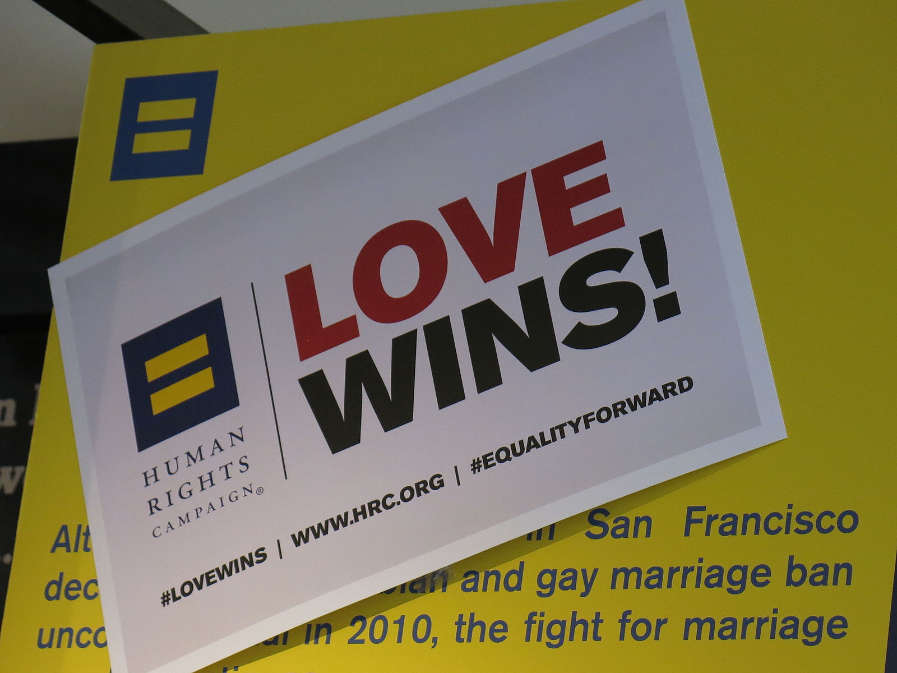

HOME
ABOUT ME
GALLERY
FINAL PROJECT
HUMAN RIGHTS CAMPAIGN AND LGBTQ EQUALITY
(all information comes from the Human Rights Campaign Fountation official website hrc.org)

- It is a fact that the rights of the LGBTQ people are constantly at risk and they are not protected in 29 states today.
- Anybody we know can be a part of this community. It could be our family member, our friend, or our co-worker.
- In the political climate that we are in right now, the LGBTQ community is being attacked and bills against their rights are being passed
continuously. Many members are facing difficulties in their daily lives that in the worse cases include discrimination and even prosecution.
- From personal experience and situations I have witnessed, I am asking for everyone to treat this as an urgent matter than needs addressing
immediately.

- We all know someone who is a part of the LGBTQ community. Can you imagine a world where their rights would not be
questioned and everyone would treat them as equal?
- Nearly 1 in 2 Black and Latinx transgender people have attempted suicide in their lifetimes.
- Conversion Therapy is still present in some states even though it has been proven as not successful and extremely dangerous.
- There are no specific laws that stand for or protect the rights of the LGBTQ Community in 29 States.
- On any given day in the U.S. there are more than 400.000 children in foster care. Many of these young people are LGBTQ youth
who have experienced rejection by their families because of their sexual orientation, gender identity or gender expression.

The LGBTQ community now more than ever needs all the help and support it can get.
We need understanding of this community and shaping
the public debate though public education, research and resources.
We need the changing of policies and practices through technical assistance and pioneering benchmarking tools.
Empowering strategic partners, community leaders and allies to be stronger advocates for equality through capacity building, training and innovative tools.

Here are some ways you can help the LGBTQ community throug
- Make a one-time or even a monthly donation that helps this Foundation to stay strong and continue fighting for LGBTQ equality.
- Talk about the HRC Foundation with your friends and share their pages on social media like Facebook, Instagram and Twitter to spread the word
and get more people to read about the struggles of the LGBTQ community and donate in their favor.
When talking to someone who is LGBTQ, try to be more understanding and educated about their problems and try to offer your help, even if it’s just emotional help.
Support means a lot to all of us, no matter who we are.